CODING AGENTS AS PIXEL WORLD MODELS
traex/GPT-6.1-Sol · 0124
点击播放 · 原生 RGB 像素
逐轮保存的候选
回放视频、检查图与代码变化。
每份候选均可单独播放。实际图片检查记录在下方工具轨迹中。
候选 01播放与检查图
点击播放 · 原生 RGB 像素
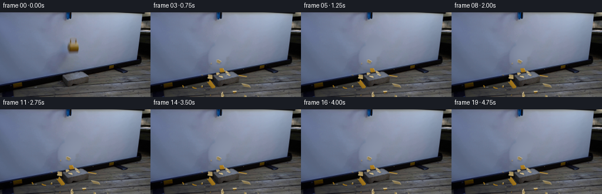
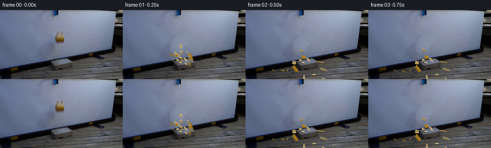
展开代码变化
--- 上一保存版本
+++ 本次保存版本
@@ -0,0 +1,234 @@
+from pathlib import Path
+import math
+import numpy as np
+from PIL import Image, ImageDraw, ImageFilter
+from scipy.ndimage import gaussian_filter
+import artifact_io
+
+ROOT=Path(__file__).resolve().parent
+S=4
+W,H=256,144
+original=np.asarray(Image.open(ROOT/'first_frame.png').convert('RGB'))
+rng=np.random.default_rng(4719)
+
+# Reconstruct only the screen formerly covered by the falling cup and its blur.
+yy,xx=np.mgrid[:H,:W]
+region=(xx>=94)&(xx<=153)&(yy>=29)&(yy<=98)
+removed=(((xx-124)/15.5)**2+((yy-57)/21.5)**2)<1
+removed|=(((xx-113)/17)**2+((yy-77)/23)**2)<1
+fit=region & ~removed
+X=(xx-124)/32;Y=(yy-61)/36
+terms=np.stack([np.ones_like(X),X,Y,X*X,X*Y,Y*Y,X**3,Y**3,X*X*Y,X*Y*Y],axis=-1)
+coef=np.linalg.lstsq(terms[fit],original[fit].astype(float),rcond=None)[0]
+bgfit=terms@coef
+# Soft transitions retain the surrounding photographic grain.
+from scipy.ndimage import distance_transform_edt
+soft=np.clip(distance_transform_edt(removed)/3.0,0,1)
+background=original.astype(float)*(1-soft[...,None])+bgfit*soft[...,None]
+background=np.clip(background,0,255).astype(np.uint8)
+Image.fromarray(background).save(ROOT/'.tmp/background.png')
+
+# Small thick-walled curved ceramic shell segments, each one a real 3-D shard.
+# Coordinates use metres; +Y is away from the camera and +Z is up.
+R=.047;thick=.005
+fragments=[]
+
+def add_fragment(vertices,faces,kind,phi,group):
+ vertices=np.asarray(vertices,float)
+ centroid=vertices.mean(axis=0)
+ local=vertices-centroid
+ velocity=np.array([math.cos(phi),math.sin(phi),0.])
+ if group=='wall':
+ speed=rng.uniform(.43,.95)
+ upward=rng.uniform(.35,.87)
+ elif group=='base':
+ speed=rng.uniform(.35,.76)
+ upward=rng.uniform(.18,.52)
+ else:
+ speed=rng.uniform(.65,1.3)
+ upward=rng.uniform(.4,1.12)
+ velocity*=speed
+ velocity+=np.array([.07,-.16,upward])
+ position=centroid+np.array([-.018,.012,.091])
+ fragments.append(dict(local=local,faces=faces,pos=position,vel=velocity,
+ angles=rng.normal(0,.05,3),spin=rng.uniform(-11,11,3),
+ kind=kind,group=group,rest=False,shade=rng.uniform(.92,1.06)))
+
+def shell(a,b,z0,z1,group='wall'):
+ n=5
+ angles=np.linspace(a,b,n)
+ lower=z0+rng.uniform(-.006,.005,n)
+ upper=z1+rng.uniform(-.005,.006,n)
+ vertices=[]
+ for rr,heights in [(R,lower),(R,upper),(R-thick,lower),(R-thick,upper)]:
+ vertices.extend([[rr*math.cos(t),rr*math.sin(t),z] for t,z in zip(angles,heights)])
+ faces=[]
+ for j in range(n-1):
+ faces.extend([([j,j+1,n+j+1,n+j],'outer'),
+ ([2*n+j,3*n+j,3*n+j+1,2*n+j+1],'inner'),
+ ([j,2*n+j,2*n+j+1,j+1],'edge'),
+ ([n+j,n+j+1,3*n+j+1,3*n+j],'edge')])
+ faces.extend([([0,n,3*n,2*n],'edge'),([n-1,3*n-1,4*n-1,2*n-1],'edge')])
+ add_fragment(vertices,faces,'shell',(a+b)/2,group)
+
+cuts=np.array([0,.88,1.74,2.63,3.52,4.40,5.37,2*math.pi])
+for k in range(7):
+ a,b=cuts[k]+.02,cuts[k+1]-.02
+ shell(a,b,.014,.057 if k in [1,4,5] else .086)
+ if k in [1,4,5]:shell(a+.02,b-.02,.060,.091,'rim')
+# Base disk breaks into substantial triangular wedge fragments.
+for k in range(6):
+ a,b=k*2*math.pi/6+.025,(k+1)*2*math.pi/6-.025
+ pts=np.array([[.008*math.cos((a+b)/2),.008*math.sin((a+b)/2)],
+ [.044*math.cos(a),.044*math.sin(a)],
+ [.044*math.cos((a+b)/2),.044*math.sin((a+b)/2)],
+ [.044*math.cos(b),.044*math.sin(b)]])
+ verts=np.concatenate([np.c_[pts,np.full(4,.002)],np.c_[pts,np.full(4,.010)]])
+ faces=[([0,3,2,1],'outer'),([4,5,6,7],'inner')]
+ for j in range(4):faces.append(([j,(j+1)%4,(j+1)%4+4,j+4],'edge'))
+ add_fragment(verts,faces,'base',(a+b)/2,'base')
+# Handle: three curved hollow-loop sections on the left side of the cup.
+for a,b in [(-1.48,-.35),(-.28,.74),(.81,1.48)]:
+ verts=[];n=7;m=6
+ for angle in np.linspace(a,b,n):
+ center=np.array([-.047-.028*math.cos(angle),0,.048+.040*math.sin(angle)])
+ axis=np.array([-math.cos(angle),0,math.sin(angle)])
+ for q in np.linspace(0,2*math.pi,m,endpoint=False):
+ verts.append(center+.0055*(axis*math.cos(q)+np.array([0,1,0])*math.sin(q)))
+ faces=[]
+ for i in range(n-1):
+ for j in range(m):faces.append(([i*m+j,i*m+(j+1)%m,(i+1)*m+(j+1)%m,(i+1)*m+j],'outer'))
+ faces.extend([(list(range(m)),'edge'),(list(range((n-1)*m,n*m)),'edge')])
+ add_fragment(verts,faces,'handle',math.pi+rng.uniform(-.4,.4),'rim')
+# A few tiny ceramic splinters, not dust or an exaggerated explosion.
+for k in range(10):
+ phi=rng.uniform(0,2*math.pi);size=rng.uniform(.006,.012)
+ c=np.array([.036*math.cos(phi),.036*math.sin(phi),rng.uniform(.007,.04)])
+ verts=np.array([[-size,-size/3,0],[size,0,0],[-size*.2,size*.5,0],[-size*.2,0,.003]])+c
+ faces=[([0,1,2],'outer'),([0,3,1],'edge'),([1,3,2],'edge'),([2,3,0],'inner')]
+ add_fragment(verts,faces,'chip',phi,'chip')
+
+def rotation(a):
+ x,y,z=a;cx,sx=math.cos(x),math.sin(x);cy,sy=math.cos(y),math.sin(y);cz,sz=math.cos(z),math.sin(z)
+ return np.array([[cz,-sz,0],[sz,cz,0],[0,0,1]])@np.array([[cy,0,sy],[0,1,0],[-sy,0,cy]])@np.array([[1,0,0],[0,cx,-sx],[0,sx,cx]])
+
+def project(v):
+ v=np.asarray(v)
+ return np.stack([128.5+160*v[...,0]-90*v[...,1],122-24*v[...,0]-100*v[...,1]-160*v[...,2]],-1)
+
+impact=.169
+snapshots={}
+dt=1/800
+sample_times=sorted(set(round(max(0,i/4-impact+offset),5) for i in range(1,20) for offset in [-.006,0,.006]))
+t=0
+for target in sample_times:
+ while t<target-1e-9:
+ step=min(dt,target-t)
+ for f in fragments:
+ if f['rest']:continue
+ f['vel'][2]-=9.81*step
+ f['pos']+=f['vel']*step
+ f['angles']+=f['spin']*step
+ rv=f['local']@rotation(f['angles']).T
+ verts=rv+f['pos']
+ # Vertical floor collision, including the elevated brick top.
+ inbrick=(abs(f['pos'][0])<.112)&(abs(f['pos'][1])<.057)
+ surface=.09 if inbrick else 0.
+ bottom=verts[:,2].min()
+ if bottom<surface and f['vel'][2]<0:
+ f['pos'][2]+=surface-bottom
+ speed=abs(f['vel'][2])
+ f['vel'][2]=speed*.19
+ f['vel'][:2]*=.63
+ f['spin']*=.56
+ if speed<.28:
+ f['vel'][2]=0
+ f['vel'][:2]*=.72
+ f['spin']*=.63
+ if np.linalg.norm(f['vel'])<.055 and np.linalg.norm(f['spin'])<.55:
+ f['rest']=True
+ t+=step
+ snapshots[target]=[(f['pos'].copy(),f['angles'].copy()) for f in fragments]
+
+# Depth of the unchanged photographed block: occlude fragments passing behind it.
+brickverts=np.array([[x,y,z] for z in [0,.09] for y in [-.057,.057] for x in [-.112,.112]])
+brickfaces=[[4,5,7,6],[0,1,5,4],[0,4,6,2],[1,3,7,5]]
+# A compact rasterizer, used only for depth and antialiased occlusion.
+depthbrick=np.full((H*S,W*S),-1e6,float)
+def raster_depth(points,depths,buffer):
+ for j in range(1,len(points)-1):
+ p=np.array([points[0],points[j],points[j+1]])*S
+ d=np.array([depths[0],depths[j],depths[j+1]])
+ xmin=max(0,int(np.floor(p[:,0].min())));xmax=min(W*S-1,int(np.ceil(p[:,0].max())))
+ ymin=max(0,int(np.floor(p[:,1].min())));ymax=min(H*S-1,int(np.ceil(p[:,1].max())))
+ if xmax<xmin or ymax<ymin:continue
+ yy1,xx1=np.mgrid[ymin:ymax+1,xmin:xmax+1];xx1=xx1+.5;yy1=yy1+.5
+ den=(p[1,1]-p[2,1])*(p[0,0]-p[2,0])+(p[2,0]-p[1,0])*(p[0,1]-p[2,1])
+ if abs(den)<1e-8:continue
+ a=((p[1,1]-p[2,1])*(xx1-p[2,0])+(p[2,0]-p[1,0])*(yy1-p[2,1]))/den
+ b=((p[2,1]-p[0,1])*(xx1-p[2,0])+(p[0,0]-p[2,0])*(yy1-p[2,1]))/den
+ c=1-a-b;inside=(a>=-.001)&(b>=-.001)&(c>=-.001)
+ dd=a*d[0]+b*d[1]+c*d[2]
+ dest=buffer[ymin:ymax+1,xmin:xmax+1]
+ np.maximum(dest,np.where(inside,dd,-1e6),out=dest)
+
+# Depth increases towards the camera, orthogonal to the projected coordinates.
+view=np.cross(np.array([160,-90,0]),np.array([-24,-100,-160]))
+view=view/np.linalg.norm(view)
+if view[1]>0:view=-view
+for face in brickfaces:
+ v=brickverts[face];raster_depth(project(v),v@view,depthbrick)
+
+light=np.array([-.3,-.4,.86]);light/=np.linalg.norm(light)
+colors={'outer':np.array([160.,117.,29.]),'inner':np.array([186.,162.,106.]),'edge':np.array([207.,189.,148.])}
+basehi=np.asarray(Image.fromarray(background).resize((W*S,H*S),Image.Resampling.BICUBIC)).astype(float)
+
+def render(time):
+ data=snapshots[round(time,5)]
+ canvas=basehi.copy()
+ shadow=Image.new('L',(W*S,H*S),0);draw=ImageDraw.Draw(shadow)
+ meshes=[]
+ for f,(pos,ang) in zip(fragments,data):
+ v=f['local']@rotation(ang).T+pos
+ meshes.append(v)
+ surface=.09 if abs(pos[0])<.112 and abs(pos[1])<.057 else 0
+ sp=pos.copy();sp[2]=surface;sp[0]+=.13*max(0,pos[2]-surface);sp[1]+=.12*max(0,pos[2]-surface)
+ p=project(sp)*S
+ r=max(.8,np.linalg.norm(np.ptp(f['local'],axis=0))*80)
+ opacity=int(55*math.exp(-5*max(0,pos[2]-surface)))
+ draw.ellipse((p[0]-r*S,p[1]-r*.35*S,p[0]+r*S,p[1]+r*.35*S),fill=opacity)
+ sha=np.asarray(shadow.filter(ImageFilter.GaussianBlur(.75*S)))/255
+ canvas*=1-sha[...,None]*.55
+ renderfaces=[]
+ for f,v in zip(fragments,meshes):
+ for indices,material in f['faces']:
+ vface=v[indices];p=project(vface)
+ normal=np.cross(vface[1]-vface[0],vface[2]-vface[0]);length=np.linalg.norm(normal)
+ if length<1e-8:continue
+ normal/=length
+ brightness=.73+.32*abs(np.dot(normal,light))+.10*max(0,normal[2])
+ c=colors[material]*brightness*f['shade']
+ renderfaces.append((np.mean(vface@view),p,vface@view,np.clip(c,0,255)))
+ renderfaces.sort(key=lambda x:x[0])
+ layer=Image.new('RGB',(W*S,H*S),(0,0,0));ld=ImageDraw.Draw(layer)
+ valid=Image.new('L',(W*S,H*S),0);md=ImageDraw.Draw(valid)
+ zbuf=np.full((H*S,W*S),-1e6,float)
+ for dep,p,ds,c in renderfaces:
+ xy=[tuple(q*S) for q in p]
+ ld.polygon(xy,fill=tuple(c.astype(int)));md.polygon(xy,fill=255)
+ raster_depth(p,ds,zbuf)
+ mask=np.asarray(valid).astype(float)/255
+ mask*=zbuf>=depthbrick-0.0018
+ rgb=np.asarray(layer).astype(float)
+ # Soft optical edges, matching the modest focus and resolution of the source.
+ a=gaussian_filter(mask,.35*S)
+ premult=gaussian_filter(rgb*mask[...,None],(.35*S,.35*S,0))
+ canvas=canvas*(1-a[...,None])+premult
+ return np.asarray(Image.fromarray(np.clip(canvas,0,255).astype(np.uint8)).resize((W,H),Image.Resampling.LANCZOS))
+
+frames=[original]
+for i in range(1,20):
+ samples=[render(round(i/4-impact+off,5)) for off in [-.006,0,.006]]
+ frames.append(np.round(np.mean(samples,axis=0)).astype(np.uint8))
+frames=np.stack(frames)
+artifact_io.save(frames,ROOT)
候选 02播放与检查图
点击播放 · 原生 RGB 像素

展开代码变化
--- 上一保存版本
+++ 本次保存版本
@@ -11,19 +11,20 @@
original=np.asarray(Image.open(ROOT/'first_frame.png').convert('RGB'))
rng=np.random.default_rng(4719)
-# Reconstruct only the screen formerly covered by the falling cup and its blur.
+# Reconstruct the projection screen exposed as the cup and its shadow move away.
yy,xx=np.mgrid[:H,:W]
-region=(xx>=94)&(xx<=153)&(yy>=29)&(yy<=98)
-removed=(((xx-124)/15.5)**2+((yy-57)/21.5)**2)<1
-removed|=(((xx-113)/17)**2+((yy-77)/23)**2)<1
+X=(xx-120)/80;Y=(yy-60)/70
+terms=np.stack([np.ones_like(X),X,Y,X*X,X*Y,Y*Y,X**3,Y**3,X*X*Y,X*Y*Y],axis=-1)
+mask=Image.new('L',(W,H),0);md=ImageDraw.Draw(mask)
+md.polygon([(110,33),(140,34),(148,58),(139,82),(119,94),(102,102),
+ (78,104),(74,89),(82,74),(101,66),(111,53)],fill=255)
+removed=np.asarray(mask)>0
+region=(xx>47)&(xx<189)&(yy>22)&(yy<100)
fit=region & ~removed
-X=(xx-124)/32;Y=(yy-61)/36
-terms=np.stack([np.ones_like(X),X,Y,X*X,X*Y,Y*Y,X**3,Y**3,X*X*Y,X*Y*Y],axis=-1)
coef=np.linalg.lstsq(terms[fit],original[fit].astype(float),rcond=None)[0]
bgfit=terms@coef
-# Soft transitions retain the surrounding photographic grain.
from scipy.ndimage import distance_transform_edt
-soft=np.clip(distance_transform_edt(removed)/3.0,0,1)
+soft=np.clip(distance_transform_edt(removed)/7,0,1)
background=original.astype(float)*(1-soft[...,None])+bgfit*soft[...,None]
background=np.clip(background,0,255).astype(np.uint8)
Image.fromarray(background).save(ROOT/'.tmp/background.png')
@@ -52,7 +53,7 @@
position=centroid+np.array([-.018,.012,.091])
fragments.append(dict(local=local,faces=faces,pos=position,vel=velocity,
angles=rng.normal(0,.05,3),spin=rng.uniform(-11,11,3),
- kind=kind,group=group,rest=False,shade=rng.uniform(.92,1.06)))
+ kind=kind,group=group,rest=False,thin=np.linalg.eigh(local.T@local)[1][:,0],shade=rng.uniform(.92,1.06)))
def shell(a,b,z0,z1,group='wall'):
n=5
@@ -128,6 +129,11 @@
if f['rest']:continue
f['vel'][2]-=9.81*step
f['pos']+=f['vel']*step
+ # The projection screen is a real vertical obstacle behind the brick.
+ if f['pos'][1]>.126:
+ f['pos'][1]=.126
+ f['vel'][1]=-abs(f['vel'][1])*.24
+ f['vel'][0]*=.83
f['angles']+=f['spin']*step
rv=f['local']@rotation(f['angles']).T
verts=rv+f['pos']
@@ -141,7 +147,20 @@
f['vel'][2]=speed*.19
f['vel'][:2]*=.63
f['spin']*=.56
- if speed<.28:
+ if speed<.40:
+ # Stable face-down orientation under gravity once the bounce fades.
+ from scipy.spatial.transform import Rotation
+ matrix=rotation(f['angles'])
+ axis=matrix@f['thin']
+ if axis[2]<0:axis=-axis
+ cross=np.cross(axis,np.array([0.,0.,1.]))
+ sn=np.linalg.norm(cross)
+ if sn>1e-7:
+ adjustment=Rotation.from_rotvec(cross/sn*math.atan2(sn,axis[2])).as_matrix()
+ f['angles']=Rotation.from_matrix(adjustment@matrix).as_euler('xyz')
+ rv=f['local']@rotation(f['angles']).T
+ f['pos'][2]=surface-rv[:,2].min()
+ f['spin']*=.1
f['vel'][2]=0
f['vel'][:2]*=.72
f['spin']*=.63
候选 03播放与检查图

候选 04播放与检查图
点击播放 · 原生 RGB 像素
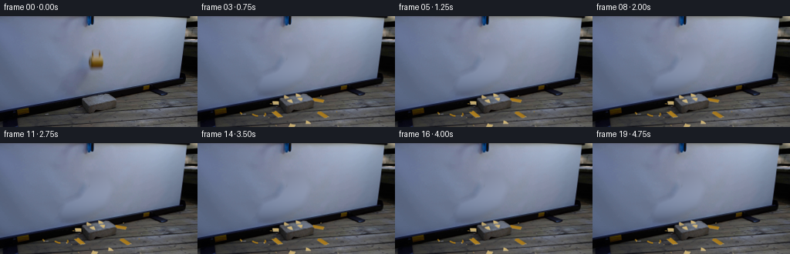
展开代码变化
--- 上一保存版本
+++ 本次保存版本
@@ -16,16 +16,20 @@
X=(xx-120)/80;Y=(yy-60)/70
terms=np.stack([np.ones_like(X),X,Y,X*X,X*Y,Y*Y,X**3,Y**3,X*X*Y,X*Y*Y],axis=-1)
mask=Image.new('L',(W,H),0);md=ImageDraw.Draw(mask)
-md.polygon([(110,33),(140,34),(148,58),(139,82),(119,94),(102,102),
- (78,104),(74,89),(82,74),(101,66),(111,53)],fill=255)
-removed=np.asarray(mask)>0
-region=(xx>47)&(xx<189)&(yy>22)&(yy<100)
+md.polygon([(109,32),(145,33),(157,72),(142,93),(81,107),
+ (58,97),(72,66),(99,51)],fill=255)
+removed=(np.asarray(mask)>0)&(yy<120-.165*xx)
+region=(xx>35)&(xx<200)&(yy>20)&(yy<120-.165*xx)
fit=region & ~removed
coef=np.linalg.lstsq(terms[fit],original[fit].astype(float),rcond=None)[0]
bgfit=terms@coef
-from scipy.ndimage import distance_transform_edt
-soft=np.clip(distance_transform_edt(removed)/7,0,1)
-background=original.astype(float)*(1-soft[...,None])+bgfit*soft[...,None]
+background=original.astype(float).copy()
+background[removed]=bgfit[removed]
+# Discrete harmonic interpolation matches every boundary pixel without a seam.
+for iteration in range(2500):
+ mean=(np.roll(background,1,0)+np.roll(background,-1,0)+
+ np.roll(background,1,1)+np.roll(background,-1,1))*.25
+ background[removed]=mean[removed]
background=np.clip(background,0,255).astype(np.uint8)
Image.fromarray(background).save(ROOT/'.tmp/background.png')
候选 05播放与检查图
候选 06播放与检查图
点击播放 · 原生 RGB 像素
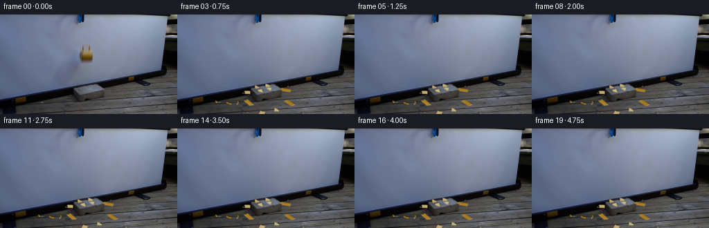
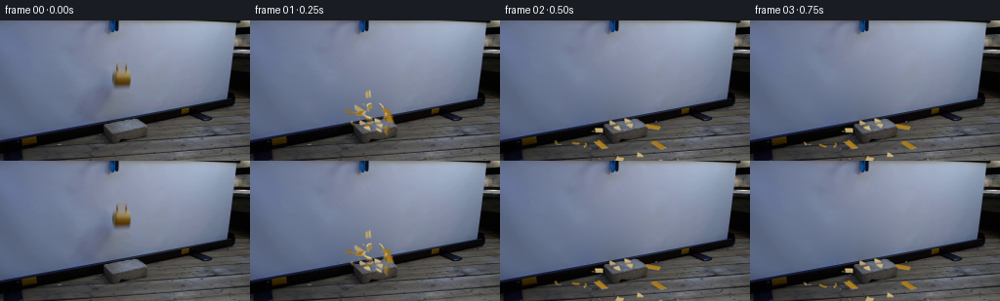
展开代码变化
--- 上一保存版本
+++ 本次保存版本
@@ -205,6 +205,7 @@
light=np.array([-.3,-.4,.86]);light/=np.linalg.norm(light)
colors={'outer':np.array([160.,117.,29.]),'inner':np.array([186.,162.,106.]),'edge':np.array([207.,189.,148.])}
basehi=np.asarray(Image.fromarray(background).resize((W*S,H*S),Image.Resampling.BICUBIC)).astype(float)
+base_roundtrip=np.asarray(Image.fromarray(basehi.astype(np.uint8)).resize((W,H),Image.Resampling.LANCZOS)).astype(float)
def render(time):
data=snapshots[round(time,5)]
@@ -247,7 +248,8 @@
a=gaussian_filter(mask,.35*S)
premult=gaussian_filter(rgb*mask[...,None],(.35*S,.35*S,0))
canvas=canvas*(1-a[...,None])+premult
- return np.asarray(Image.fromarray(np.clip(canvas,0,255).astype(np.uint8)).resize((W,H),Image.Resampling.LANCZOS))
+ low=np.asarray(Image.fromarray(np.clip(canvas,0,255).astype(np.uint8)).resize((W,H),Image.Resampling.LANCZOS)).astype(float)
+ return np.clip(background.astype(float)+low-base_roundtrip,0,255).astype(np.uint8)
frames=[original]
for i in range(1,20):
可观测工具轨迹
实际执行的命令与返回图片。
命令 1exit 0
/bin/bash -lc "ls -la && cat prompt.txt && printf '\\n---RULES---\\n' && cat GENERATION_RULES.md"
命令 2exit 0
/bin/bash -lc "cat artifact_io.py && python - <<'PY'
from PIL import Image
im=Image.open('first_frame.png');print(im.size);im.resize((1024,576)).save('.tmp/enlarged.png')
PY"命令 3exit 0
/bin/bash -lc "python - <<'PY'
import importlib.util
for m in ['numpy','PIL','scipy','cv2']: print(m, bool(importlib.util.find_spec(m)))
from PIL import Image
im=Image.open('first_frame.png');im.crop((95,25,158,93)).resize((504,544)).save('.tmp/mug_crop.png')
PY"命令 4exit 0
/bin/bash -lc "python - <<'PY'
from PIL import Image
im=Image.open('first_frame.png');im.crop((83,84,170,144)).resize((696,480)).save('.tmp/brick_crop.png')
PY"命令 5exit 0
/bin/bash -lc "python - <<'PY'
from PIL import Image
im=Image.open('first_frame.png');im.crop((106,35,141,79)).resize((350,440),Image.Resampling.NEAREST).save('.tmp/mug_nearest.png')
PY"命令 6exit 0
/bin/bash -lc "cat > generate.py <<'PY'
from pathlib import Path
import math
import numpy as np
from PIL import Image, ImageDraw, ImageFilter
from scipy.ndimage import gaussian_filter
import artifact_io
ROOT=Path(__file__).resolve().parent
S=4
W,H=256,144
original=np.asarray(Image.open(ROOT/'first_frame.png').convert('RGB'))
rng=np.random.default_rng(4719)
# Reconstruct only the screen formerly covered by the falling cup and its blur.
yy,xx=np.mgrid[:H,:W]
region=(xx>=94)&(xx<=153)&(yy>=29)&(yy<=98)
removed=(((xx-124)/15.5)**2+((yy-57)/21.5)**2)<1
removed|=(((xx-113)/17)**2+((yy-77)/23)**2)<1
fit=region & ~removed
X=(xx-124)/32;Y=(yy-61)/36
terms=np.stack([np.ones_like(X),X,Y,X*X,X*Y,Y*Y,X**3,Y**3,X*X*Y,X*Y*Y],axis=-1)
coef=np.linalg.lstsq(terms[fit],original[fit].astype(float),rcond=None)[0]
bgfit=terms@coef
# Soft transitions retain the surrounding photographic grain.
from scipy.ndimage import distance_transform_edt
soft=np.clip(distance_transform_edt(removed)/3.0,0,1)
background=original.astype(float)*(1-soft[...,None])+bgfit*soft[...,None]
background=np.clip(background,0,255).astype(np.uint8)
Image.fromarray(background).save(ROOT/'.tmp/background.png')
# Small thick-walled curved ceramic shell segments, each one a real 3-D shard.
# Coordinates use metres; +Y is away from the camera and +Z is up.
R=.047;thick=.005
fragments=[]
def add_fragment(vertices,faces,kind,phi,group):
vertices=np.asarray(vertices,float)
centroid=vertices.mean(axis=0)
local=vertices-centroid
velocity=np.array([math.cos(phi),math.sin(phi),0.])
if group=='wall':
speed=rng.uniform(.43,.95)
upward=rng.uniform(.35,.87)
elif group=='base':
speed=rng.uniform(.35,.76)
upward=rng.uniform(.18,.52)
else:
speed=rng.uniform(.65,1.3)
upward=rng.uniform(.4,1.12)
velocity*=speed
velocity+=np.array([.07,-.16,upward])
position=centroid+np.array([-.018,.012,.091])
fragments.append(dict(local=local,faces=faces,pos=position,vel=velocity,
angles=rng.normal(0,.05,3),spin=rng.uniform(-11,11,3),
kind=kind,group=group,rest=False,shade=rng.uniform(.92,1.06)))
def shell(a,b,z0,z1,group='wall'):
n=5
angles=np.linspace(a,b,n)
lower=z0+rng.uniform(-.006,.005,n)
upper=z1+rng.uniform(-.005,.006,n)
vertices=[]
for rr,heights in [(R,lower),(R,upper),(R-thick,lower),(R-thick,upper)]:
vertices.extend([[rr*math.cos(t),rr*math.sin(t),z] for t,z in zip(angles,heights)])
faces=[]
for j in range(n-1):
faces.extend([([j,j+1,n+j+1,n+j],'outer'),
([2*n+j,3*n+j,3*n+j+1,2*n+j+1],'inner'),
([j,2*n+j,2*n+j+1,j+1],'edge'),
([n+j,n+j+1,3*n+j+1,3*n+j],'edge')])
faces.extend([([0,n,3*n,2*n],'edge'),([n-1,3*n-1,4*n-1,2*n-1],'edge')])
add_fragment(vertices,faces,'shell',(a+b)/2,group)
cuts=np.array([0,.88,1.74,2.63,3.52,4.40,5.37,2*math.pi])
for k in range(7):
a,b=cuts[k]+.02,cuts[k+1]-.02
shell(a,b,.014,.057 if k in [1,4,5] else .086)
if k in [1,4,5]:shell(a+.02,b-.02,.060,.091,'rim')
# Base disk breaks into substantial triangular wedge fragments.
for k in range(6):
a,b=k*2*math.pi/6+.025,(k+1)*2*math.pi/6-.025
pts=np.array([[.008*math.cos((a+b)/2),.008*math.sin((a+b)/2)],
[.044*math.cos(a),.044*math.sin(a)],
[.044*math.cos((a+b)/2),.044*math.sin((a+b)/2)],
[.044*math.cos(b),.044*math.sin(b)]])
verts=np.concatenate([np.c_[pts,np.full(4,.002)],np.c_[pts,np.full(4,.010)]])
faces=[([0,3,2,1],'outer'),([4,5,6,7],'inner')]
for j in range(4):faces.append(([j,(j+1)%4,(j+1)%4+4,j+4],'edge'))
add_fragment(verts,faces,'base',(a+b)/2,'base')
# Handle: three curved hollow-loop sections on the left side of the cup.
for a,b in [(-1.48,-.35),(-.28,.74),(.81,1.48)]:
verts=[];n=7;m=6
for angle in np.linspace(a,b,n):
center=np.array([-.047-.028*math.cos(angle),0,.048+.040*math.sin(angle)])
axis=np.array([-math.cos(angle),0,math.sin(angle)])
for q in np.linspace(0,2*math.pi,m,endpoint=False):
verts.append(center+.0055*(axis*math.cos(q)+np.array([0,1,0])*math.sin(q)))
faces=[]
for i in range(n-1):
for j in range(m):faces.append(([i*m+j,i*m+(j+1)%m,(i+1)*m+(j+1)%m,(i+1)*m+j],'outer'))
faces.extend([(list(range(m)),'edge'),(list(range((n-1)*m,n*m)),'edge')])
add_fragment(verts,faces,'handle',math.pi+rng.uniform(-.4,.4),'rim')
# A few tiny ceramic splinters, not dust or an exaggerated explosion.
for k in range(10):
phi=rng.uniform(0,2*math.pi);size=rng.uniform(.006,.012)
c=np.array([.036*math.cos(phi),.036*math.sin(phi),rng.uniform(.007,.04)])
verts=np.array([[-size,-size/3,0],[size,0,0],[-size*.2,size*.5,0],[-size*.2,0,.003]])+c
faces=[([0,1,2],'outer'),([0,3,1],'edge'),([1,3,2],'edge'),([2,3,0],'inner')]
add_fragment(verts,faces,'chip',phi,'chip')
def rotation(a):
x,y,z=a;cx,sx=math.cos(x),math.sin(x);cy,sy=math.cos(y),math.sin(y);cz,sz=math.cos(z),math.sin(z)
return np.array([[cz,-sz,0],[sz,cz,0],[0,0,1]])@np.array([[cy,0,sy],[0,1,0],[-sy,0,cy]])@np.array([[1,0,0],[0,cx,-sx],[0,sx,cx]])
def project(v):
v=np.asarray(v)
return np.stack([128.5+160*v[...,0]-90*v[...,1],122-24*v[...,0]-100*v[...,1]-160*v[...,2]],-1)
impact=.169
snapshots={}
dt=1/800
sample_times=sorted(set(round(max(0,i/4-impact+offset),5) for i in range(1,20) for offset in [-.006,0,.006]))
t=0
for target in sample_times:
while t<target-1e-9:
step=min(dt,target-t)
for f in fragments:
if f['rest']:continue
f['vel'][2]-=9.81*step
f['pos']+=f['vel']*step
f['angles']+=f['spin']*step
rv=f['local']@rotation(f['angles']).T
verts=rv+f['pos']
# Vertical floor collision, including the elevated brick top.
inbrick=(abs(f['pos'][0])<.112)&(abs(f['pos'][1])<.057)
surface=.09 if inbrick else 0.
bottom=verts[:,2].min()
if bottom<surface and f['vel'][2]<0:
f['pos'][2]+=surface-bottom
speed=abs(f['vel'][2])
f['vel'][2]=speed*.19
f['vel'][:2]*=.63
f['spin']*=.56
if speed<.28:
f['vel'][2]=0
f['vel'][:2]*=.72
f['spin']*=.63
if np.linalg.norm(f['vel'])<.055 and np.linalg.norm(f['spin'])<.55:
f['rest']=True
t+=step
snapshots[target]=[(f['pos'].copy(),f['angles'].copy()) for f in fragments]
# Depth of the unchanged photographed block: occlude fragments passing behind it.
brickverts=np.array([[x,y,z] for z in [0,.09] for y in [-.057,.057] for x in [-.112,.112]])
brickfaces=[[4,5,7,6],[0,1,5,4],[0,4,6,2],[1,3,7,5]]
# A compact rasterizer, used only for depth and antialiased occlusion.
depthbrick=np.full((H*S,W*S),-1e6,float)
def raster_depth(points,depths,buffer):
for j in range(1,len(points)-1):
p=np.array([points[0],points[j],points[j+1]])*S
d=np.array([depths[0],depths[j],depths[j+1]])
xmin=max(0,int(np.floor(p[:,0].min())));xmax=min(W*S-1,int(np.ceil(p[:,0].max())))
ymin=max(0,int(np.floor(p[:,1].min())));ymax=min(H*S-1,int(np.ceil(p[:,1].max())))
if xmax<xmin or ymax<ymin:continue
yy1,xx1=np.mgrid[ymin:ymax+1,xmin:xmax+1];xx1=xx1+.5;yy1=yy1+.5
den=(p[1,1]-p[2,1])*(p[0,0]-p[2,0])+(p[2,0]-p[1,0])*(p[0,1]-p[2,1])
if abs(den)<1e-8:continue
a=((p[1,1]-p[2,1])*(xx1-p[2,0])+(p[2,0]-p[1,0])*(yy1-p[2,1]))/den
b=((p[2,1]-p[0,1])*(xx1-p[2,0])+(p[0,0]-p[2,0])*(yy1-p[2,1]))/den
c=1-a-b;inside=(a>=-.001)&(b>=-.001)&(c>=-.001)
dd=a*d[0]+b*d[1]+c*d[2]
dest=buffer[ymin:ymax+1,xmin:xmax+1]
np.maximum(dest,np.where(inside,dd,-1e6),out=dest)
# Depth increases towards the camera, orthogonal to the projected coordinates.
view=np.cross(np.array([160,-90,0]),np.array([-24,-100,-160]))
view=view/np.linalg.norm(view)
if view[1]>0:view=-view
for face in brickfaces:
v=brickverts[face];raster_depth(project(v),v@view,depthbrick)
light=np.array([-.3,-.4,.86]);light/=np.linalg.norm(light)
colors={'outer':np.array([160.,117.,29.]),'inner':np.array([186.,162.,106.]),'edge':np.array([207.,189.,148.])}
basehi=np.asarray(Image.fromarray(background).resize((W*S,H*S),Image.Resampling.BICUBIC)).astype(float)
def render(time):
data=snapshots[round(time,5)]
canvas=basehi.copy()
shadow=Image.new('L',(W*S,H*S),0);draw=ImageDraw.Draw(shadow)
meshes=[]
for f,(pos,ang) in zip(fragments,data):
v=f['local']@rotation(ang).T+pos
meshes.append(v)
surface=.09 if abs(pos[0])<.112 and abs(pos[1])<.057 else 0
sp=pos.copy();sp[2]=surface;sp[0]+=.13*max(0,pos[2]-surface);sp[1]+=.12*max(0,pos[2]-surface)
p=project(sp)*S
r=max(.8,np.linalg.norm(np.ptp(f['local'],axis=0))*80)
opacity=int(55*math.exp(-5*max(0,pos[2]-surface)))
draw.ellipse((p[0]-r*S,p[1]-r*.35*S,p[0]+r*S,p[1]+r*.35*S),fill=opacity)
sha=np.asarray(shadow.filter(ImageFilter.GaussianBlur(.75*S)))/255
canvas*=1-sha[...,None]*.55
renderfaces=[]
for f,v in zip(fragments,meshes):
for indices,material in f['faces']:
vface=v[indices];p=project(vface)
normal=np.cross(vface[1]-vface[0],vface[2]-vface[0]);length=np.linalg.norm(normal)
if length<1e-8:continue
normal/=length
brightness=.73+.32*abs(np.dot(normal,light))+.10*max(0,normal[2])
c=colors[material]*brightness*f['shade']
renderfaces.append((np.mean(vface@view),p,vface@view,np.clip(c,0,255)))
renderfaces.sort(key=lambda x:x[0])
layer=Image.new('RGB',(W*S,H*S),(0,0,0));ld=ImageDraw.Draw(layer)
valid=Image.new('L',(W*S,H*S),0);md=ImageDraw.Draw(valid)
zbuf=np.full((H*S,W*S),-1e6,float)
for dep,p,ds,c in renderfaces:
xy=[tuple(q*S) for q in p]
ld.polygon(xy,fill=tuple(c.astype(int)));md.polygon(xy,fill=255)
raster_depth(p,ds,zbuf)
mask=np.asarray(valid).astype(float)/255
mask*=zbuf>=depthbrick-0.0018
rgb=np.asarray(layer).astype(float)
# Soft optical edges, matching the modest focus and resolution of the source.
a=gaussian_filter(mask,.35*S)
premult=gaussian_filter(rgb*mask[...,None],(.35*S,.35*S,0))
canvas=canvas*(1-a[...,None])+premult
return np.asarray(Image.fromarray(np.clip(canvas,0,255).astype(np.uint8)).resize((W,H),Image.Resampling.LANCZOS))
frames=[original]
for i in range(1,20):
samples=[render(round(i/4-impact+off,5)) for off in [-.006,0,.006]]
frames.append(np.round(np.mean(samples,axis=0)).astype(np.uint8))
frames=np.stack(frames)
artifact_io.save(frames,ROOT)
PY
python generate.py"命令 7exit 0
/bin/bash -lc "python - <<'PY'
from PIL import Image
for i in [1,2,19]:
Image.open(f'frames/{i:02}.png').resize((1024,576)).save(f'.tmp/frame{i}.png')
PY"命令 8exit 0
/bin/bash -lc "python - <<'PY' import generate as g for f in g.fragments: p=f['pos'];v=f['local']@g.rotation(f['angles']).T+p print(f['group'],p.round(3),v[:,2].min().round(3),v[:,2].max().round(3), g.project(p).round(1),f['rest']) PY"
命令 9exit 0
/bin/bash -lc "cat > .tmp/test_background.py <<'PY'
import cv2,numpy as np
from PIL import Image,ImageDraw
from scipy.ndimage import gaussian_filter
im=np.asarray(Image.open('first_frame.png')).copy()
m=Image.new('L',(256,144));d=ImageDraw.Draw(m)
d.polygon([(117,39),(133,39),(138,52),(138,71),(134,77),(123,80),(114,75),(111,58)],fill=255)
d.polygon([(113,66),(122,74),(109,91),(103,97),(94,97),(90,93),(93,80),(101,71)],fill=255)
m=np.array(m);m=cv2.dilate(m,np.ones((3,3),np.uint8),iterations=1)
versions=[]
for method in [cv2.INPAINT_TELEA,cv2.INPAINT_NS]:
a=cv2.inpaint(im,m,5,method)
versions.append(a)
# Harmonic extension of a diffused reference over the missing region.
a=cv2.inpaint(im,m,5,cv2.INPAINT_NS).astype(float)
for _ in range(800):
avg=(np.roll(a,1,0)+np.roll(a,-1,0)+np.roll(a,1,1)+np.roll(a,-1,1))/4
a[m>0]=avg[m>0]
versions.append(a.astype(np.uint8))
canvas=Image.new('RGB',(1024,576))
for i,v in enumerate([im]+versions):
canvas.paste(Image.fromarray(v).resize((512,288)),((i%2)*512,(i//2)*288))
Image.fromarray(versions[-1]).save('.tmp/background_harmonic.png')
Image.fromarray(m).save('.tmp/removal_mask.png')
canvas.save('.tmp/background_compare.png')
PY
python .tmp/test_background.py"命令 10exit 0
/bin/bash -lc 'sed -i "/m=np.array(m)/i d.ellipse((76,58,132,104),fill=255)" .tmp/test_background.py python .tmp/test_background.py'
命令 11exit 0
/bin/bash -lc "python - <<'PY'
p='generate.py'
s=open(p).read()
a=s.index('# Reconstruct only');b=s.index('# Small thick-walled')
s=s[:a]+'''# Reconstruct the projection screen exposed as the cup and its shadow move away.
yy,xx=np.mgrid[:H,:W]
X=(xx-120)/80;Y=(yy-60)/70
terms=np.stack([np.ones_like(X),X,Y,X*X,X*Y,Y*Y,X**3,Y**3,X*X*Y,X*Y*Y],axis=-1)
mask=Image.new('L',(W,H),0);md=ImageDraw.Draw(mask)
md.polygon([(110,33),(140,34),(148,58),(139,82),(119,94),(102,102),
(78,104),(74,89),(82,74),(101,66),(111,53)],fill=255)
removed=np.asarray(mask)>0
region=(xx>47)&(xx<189)&(yy>22)&(yy<100)
fit=region & ~removed
coef=np.linalg.lstsq(terms[fit],original[fit].astype(float),rcond=None)[0]
bgfit=terms@coef
from scipy.ndimage import distance_transform_edt
soft=np.clip(distance_transform_edt(removed)/7,0,1)
background=original.astype(float)*(1-soft[...,None])+bgfit*soft[...,None]
background=np.clip(background,0,255).astype(np.uint8)
Image.fromarray(background).save(ROOT/'.tmp/background.png')
'''+s[b:]
s=s.replace(\"kind=kind,group=group,rest=False,shade=rng.uniform(.92,1.06)))\", \"kind=kind,group=group,rest=False,thin=np.linalg.eigh(local.T@local)[1][:,0],shade=rng.uniform(.92,1.06)))\")
s=s.replace(\"f['pos']+=f['vel']*step\", \"\"\"f['pos']+=f['vel']*step
# The projection screen is a real vertical obstacle behind the brick.
if f['pos'][1]>.126:
f['pos'][1]=.126
f['vel'][1]=-abs(f['vel'][1])*.24
f['vel'][0]*=.83\"\"\")
s=s.replace(\"if speed<.28:\\n f['vel'][2]=0\", \"\"\"if speed<.40:
# Stable face-down orientation under gravity once the bounce fades.
from scipy.spatial.transform import Rotation
matrix=rotation(f['angles'])
axis=matrix@f['thin']
if axis[2]<0:axis=-axis
cross=np.cross(axis,np.array([0.,0.,1.]))
sn=np.linalg.norm(cross)
if sn>1e-7:
adjustment=Rotation.from_rotvec(cross/sn*math.atan2(sn,axis[2])).as_matrix()
f['angles']=Rotation.from_matrix(adjustment@matrix).as_euler('xyz')
rv=f['local']@rotation(f['angles']).T
f['pos'][2]=surface-rv[:,2].min()
f['spin']*=.1
f['vel'][2]=0\"\"\")
open(p,'w').write(s)
PY
python generate.py"命令 12exit 0
/bin/bash -lc "python - <<'PY'
p='generate.py';s=open(p).read();a=s.index(\"mask=Image.new('L'\");b=s.index(\"Image.fromarray(background).save\",a)
s=s[:a]+'''mask=Image.new('L',(W,H),0);md=ImageDraw.Draw(mask)
md.polygon([(109,32),(145,33),(157,72),(142,93),(81,107),
(58,97),(72,66),(99,51)],fill=255)
removed=(np.asarray(mask)>0)&(yy<120-.165*xx)
region=(xx>35)&(xx<200)&(yy>20)&(yy<120-.165*xx)
fit=region & ~removed
coef=np.linalg.lstsq(terms[fit],original[fit].astype(float),rcond=None)[0]
bgfit=terms@coef
background=original.astype(float).copy()
background[removed]=bgfit[removed]
# Discrete harmonic interpolation matches every boundary pixel without a seam.
for iteration in range(2500):
mean=(np.roll(background,1,0)+np.roll(background,-1,0)+
np.roll(background,1,1)+np.roll(background,-1,1))*.25
background[removed]=mean[removed]
background=np.clip(background,0,255).astype(np.uint8)
'''+s[b:]
open(p,'w').write(s)
PY
python generate.py"命令 13exit 0
/bin/bash -lc "python - <<'PY'
p='generate.py';s=open(p).read()
s=s.replace(\"basehi=np.asarray(Image.fromarray(background).resize((W*S,H*S),Image.Resampling.BICUBIC)).astype(float)\", \"basehi=np.asarray(Image.fromarray(background).resize((W*S,H*S),Image.Resampling.BICUBIC)).astype(float)\\nbase_roundtrip=np.asarray(Image.fromarray(basehi.astype(np.uint8)).resize((W,H),Image.Resampling.LANCZOS)).astype(float)\")
s=s.replace(\"return np.asarray(Image.fromarray(np.clip(canvas,0,255).astype(np.uint8)).resize((W,H),Image.Resampling.LANCZOS))\", \"low=np.asarray(Image.fromarray(np.clip(canvas,0,255).astype(np.uint8)).resize((W,H),Image.Resampling.LANCZOS)).astype(float)\\n return np.clip(background.astype(float)+low-base_roundtrip,0,255).astype(np.uint8)\")
open(p,'w').write(s)
PY
python generate.py
python - <<'PY'
import numpy as np
from PIL import Image
p=np.load('pixels.npz')['pixels'];a=np.asarray(Image.open('frames/00.png'));b=np.asarray(Image.open('first_frame.png'))
assert np.array_equal(a,b)
assert p.shape==(144,256,20)
print('Validated 20 RGB frames, 256 x 144, exact initial frame.')
PY"视觉工具实际返回图片 1
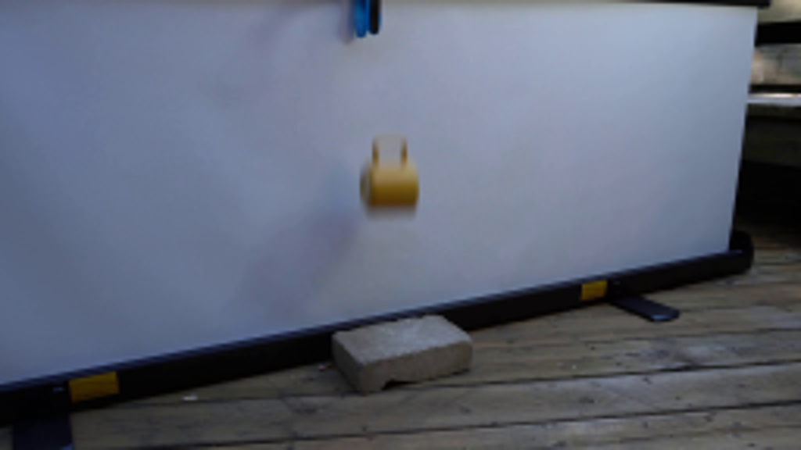
视觉工具实际返回图片 2
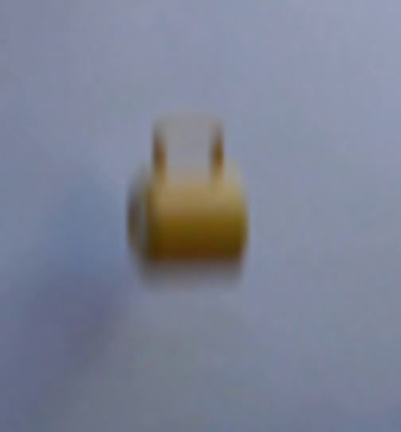
视觉工具实际返回图片 3
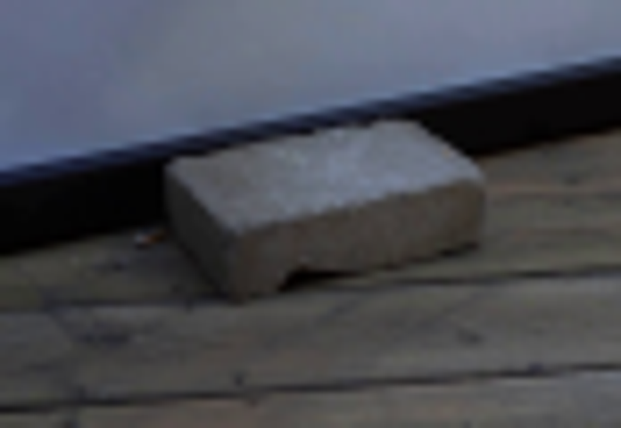
视觉工具实际返回图片 4
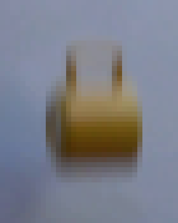
视觉工具实际返回图片 5

视觉工具实际返回图片 6
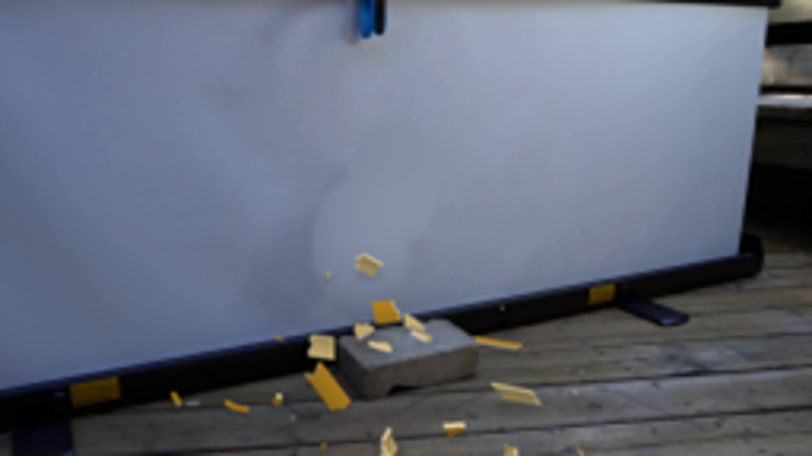
视觉工具实际返回图片 7
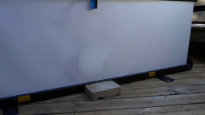
视觉工具实际返回图片 8
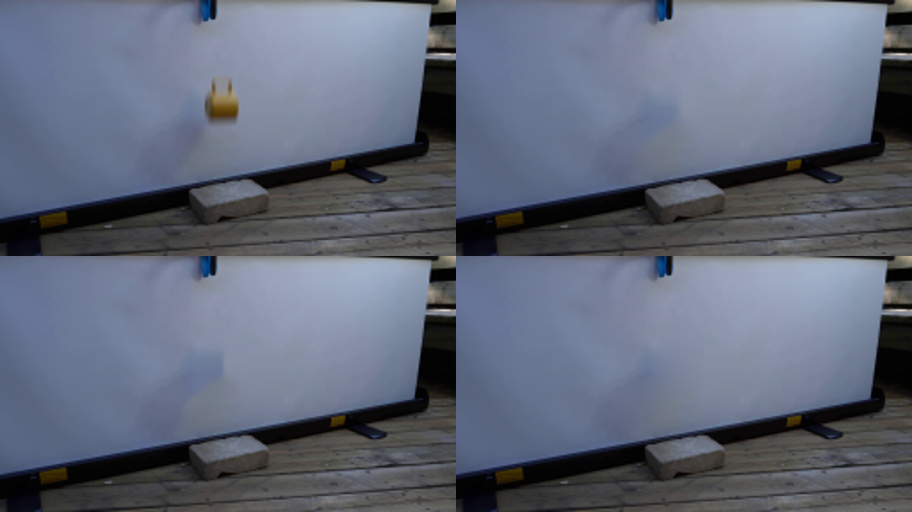
视觉工具实际返回图片 9
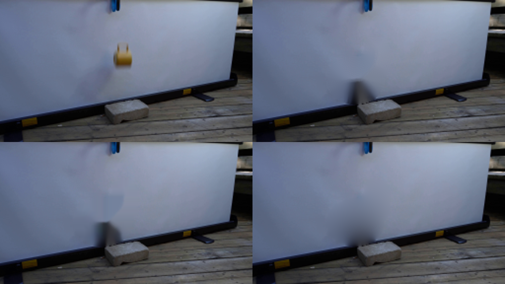
视觉工具实际返回图片 10
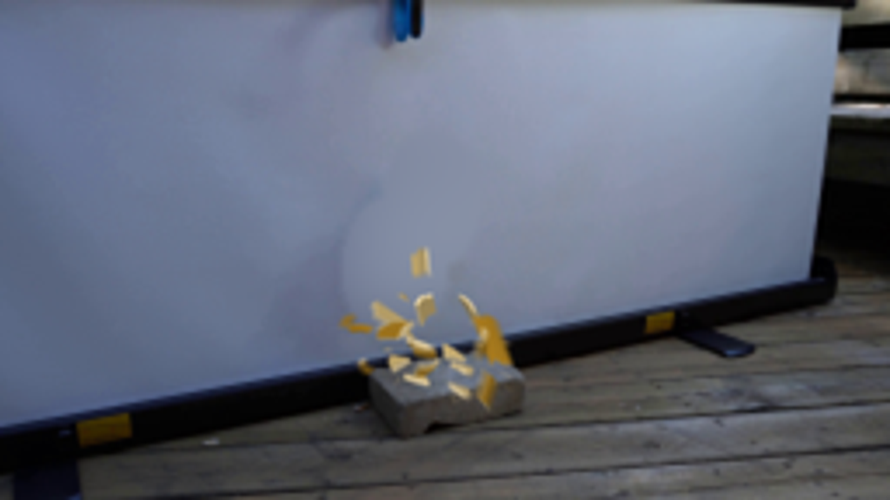
视觉工具实际返回图片 11

视觉工具实际返回图片 12
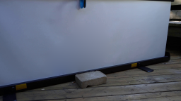
视觉工具实际返回图片 13
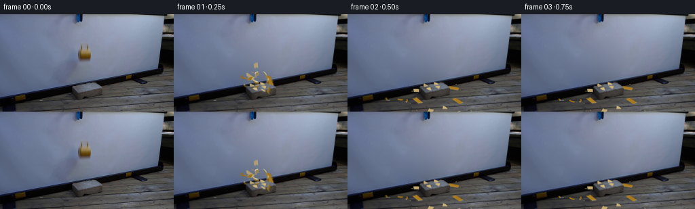
保存候选 6 份；完成命令 13 次；可验证图片返回 13 张。原始 API 响应与完整日志保留在本地。